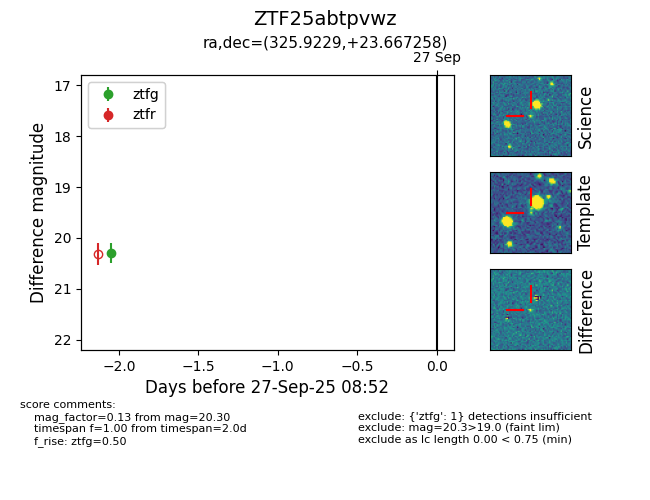

FINK: ZTF25abtpvwz
Lasair: ZTF25abtpvwz
ALeRCE: ZTF25abtpvwz
ZTF25abtpvwz (ztf,fink)
equatorial (ra, dec) = (325.9229,+23.66726)
galactic (l, b) = (76.7647,-21.93387)

last ztfg=20.30
1 ztfg detections